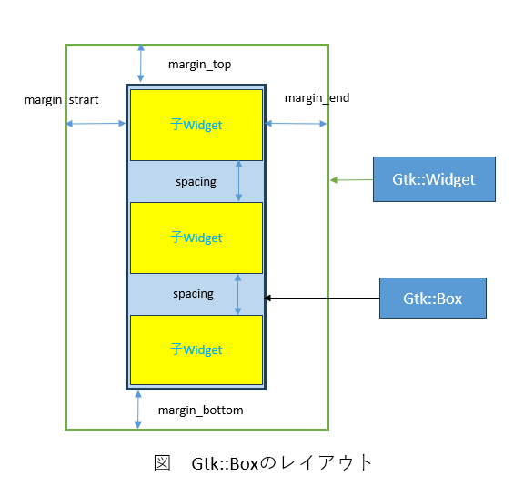
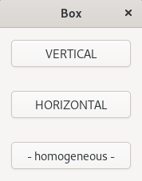
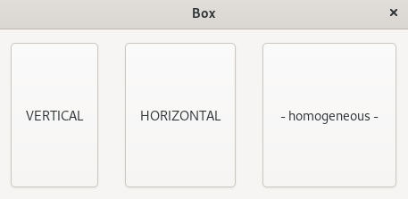
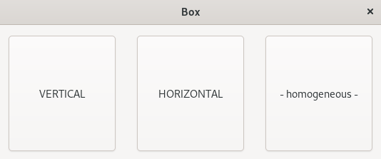

(update:2025/7/25)
Gtk::Boxは、multi-item containerです。Gtk::Boxの中に縦あるいは横向きに複数のウィジットを格納することができます。
Gtk::Boxのレイアウトを次に示します。箱状に水平あるいは鉛直方向に子ウィジットを配置します。

Gtk::Boxのwidgetの宣言を行います。
Gtk::Boxに子ウィジットを追加します。
【関 数】
| void Gtk::Box::append( | Gtk::Widget | widget ) |
|---|
【返 値】 : 無し
Gtk::Boxの周囲にマージンを指定します。指定する数値はpixel単位です。set_margin()では、4辺の周囲に同じマージンをセットします。
【関 数】
| void Gtk::Widget::set_margin( | int | margin ) |
|---|
【返 値】 : 無し
※マージンを指定する方法は、この他に各辺ごとにマージンをセットすることができます。
set_margin_top():上端、set_margin_start():左端、set_margin_end():右端、set_margin_bottom():下端
Gtk::Boxが格納する子ウィジットの間隔を指定します。指定する数値はpixel単位です。
【関 数】
| void Gtk::Box::set_spacing( | int | spacing ) |
|---|
【返 値】 : 無し
Gtk::Boxを子Widgetとして親Widgetにセットします。
【関 数】
| void Gtk::Window::set_child( | Widget & | child ) |
|---|
【返 値】 : 無し
Gtk::Boxの子Widgetの配置をとして親Widgetにセットします。デフォルトは水平方向です。
【関 数】
| void Gtk::Box::set_orientation( | Orientation | orientation ) |
|---|
【返 値】 : 無し
| Gtk::Orientation | |
|---|---|
| 書式 | 内容 |
| HORIZONTAL | 子ウィジットを水平方向に配置 |
| VERTICAL | 子ウィジットを鉛直方向に配置 |
Gtk::Boxに格納する子ウィジットの幅を均等に揃えます。
【関 数】
| void Gtk::Box::set_homogeneous( | bool | homogeneous=true ) |
|---|
【返 値】 : 無し
#include <gtkmm.h>
class MyWindow : public Gtk::Window {
private:
Gtk::Button m_button_A, m_button_B, m_button_C;
// 1.宣言
Gtk::Box m_box;
public:
MyWindow();
virtual ~MyWindow() = default;
protected:
// Signal handlers:
void on_button_clicked( const Glib::ustring& data );
};
MyWindow::MyWindow()
: m_box( Gtk::Orientation::VERTICAL )
{
set_title( "Box" );
m_button_A.set_label( "VERTICAL" );
m_button_A.signal_clicked().connect( sigc::bind(
sigc::mem_fun( *this, &MyWindow::on_button_clicked), "A" ));
// 2.子ウィジットの追加
m_box.append( m_button_A );
m_button_B.set_label( "HORIZONTAL" );
m_button_B.signal_clicked().connect( sigc::bind(
sigc::mem_fun( *this, &MyWindow::on_button_clicked), "B" ));
m_box.append( m_button_B );
m_button_C.set_label( " - homogeneous - " );
m_button_C.signal_clicked().connect( sigc::bind(
sigc::mem_fun( *this, &MyWindow::on_button_clicked), "C" ));
m_box.append( m_button_C );
// 3.マージンの指定
m_box.set_margin( 15 );
// 4.スペースの指定
m_box.set_spacing( 30 );
m_box.set_halign( Gtk::Align::CENTER );
// 5.親ウィジットの子ウィジットとして指定
set_child( m_box );
}
void MyWindow::on_button_clicked( const Glib::ustring& data )
{
if ( data == "A" ) {
// 6.Gtk::Boxの配置を垂直に
m_box.set_orientation( Gtk::Orientation::VERTICAL );
m_box.set_homogeneous( false );
}
else if( data == "B" ) {
m_box.set_orientation( Gtk::Orientation::HORIZONTAL );
m_box.set_homogeneous( false );
}
else if( data == "C" ) {
// 7.子ウィジットの幅を均等に揃える
m_box.set_homogeneous( true );
}
}
int main(int argc, char *argv[])
{
auto app = Gtk::Application::create( "gtkmm4.examples" );
return app->make_window_and_run<MyWindow>(argc, argv);
}
| Gtk::ScrolledWindow | ||
|---|---|---|
| 1.起動時 | 2.HORIZONTALをクリック | 3.-homogeneous-をクリック |
|  |  |  |